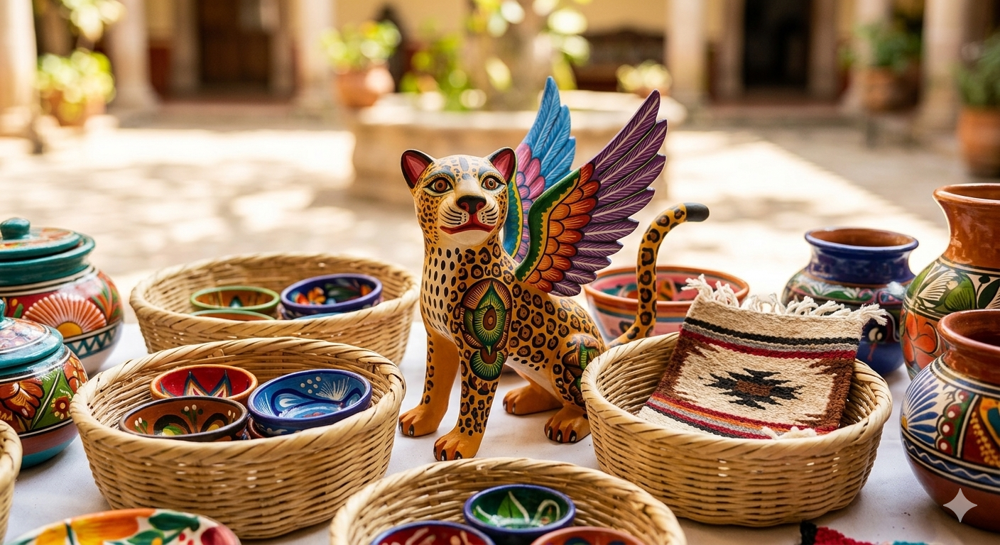
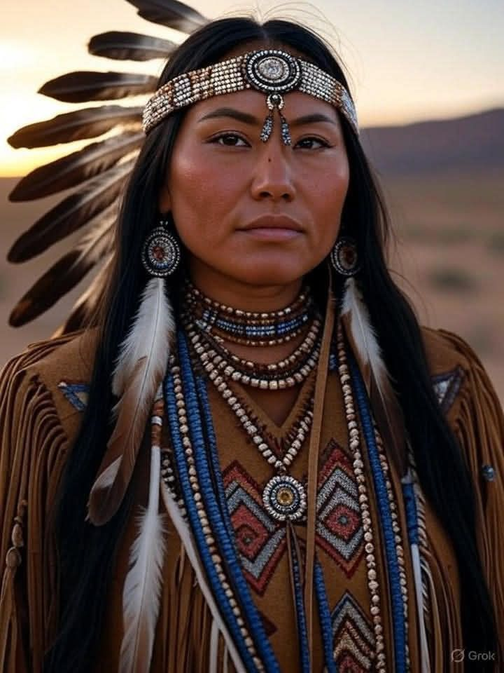
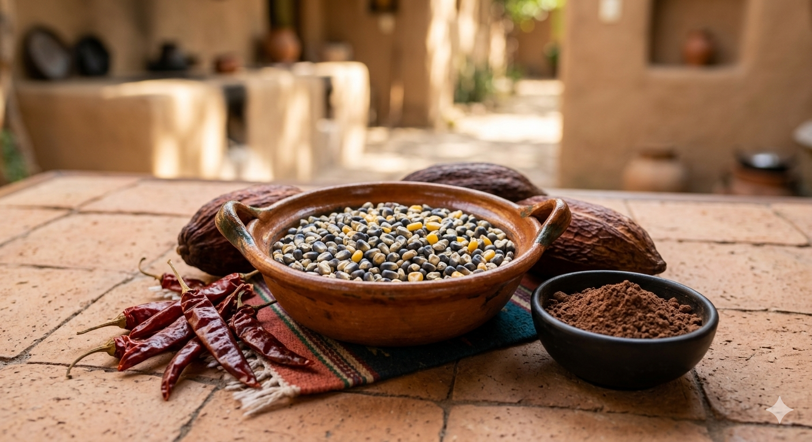
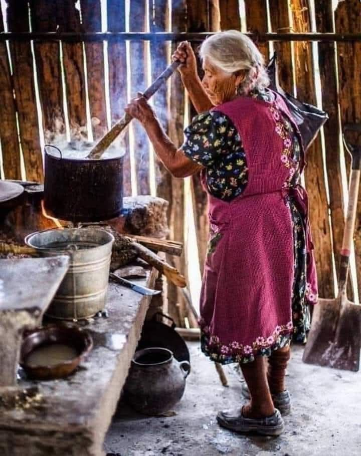

Identidad y Justicia Social

En esta imagen se aprecia la contradicción de valorar nuestros objetos pero no a las personas que los crean. Estas piezas enfrentan cotidianamente el menosprecio del regateo, como si nuestro conocimiento ancestral no tuviera un valor profesional. Mi intención es hacer comprender que detrás de cada obra hay una persona que vive la exclusión económica y que merece un trato justo por su intelecto y su tiempo, no solo que se vea como un adorno barato.

Elegí este rostro para confrontar directamente el estigma que muchas personas enfrentan solo por su apariencia. Para mí, esta imagen representa la resistencia frente a una sociedad que juzga antes de conocer y que, cotidianamente, impone barreras de acceso a servicios básicos, justicia y trato digno basados en rasgos físicos. La pongo aquí porque quiero denunciar que ser indígena no debería ser sinónimo de sospecha o de inferioridad; este rostro es el testimonio de una dignidad que se mantiene intacta a pesar de vivir en un entorno que constantemente intenta menospreciar nuestra identidad.

He incluido esta imagen para crear conciencia sobre el valor real de nuestra gastronomía. A veces disfrutamos de los sabores tradicionales sin detenernos a pensar en las personas y en las historias que hay detrás de cada receta. Con esto, busco que comprendas que nuestra cultura no es solo un producto de consumo, sino el sustento de muchas familias que día a día luchan por salir adelante. Mi propósito es que valoremos no solo el platillo, sino también los derechos y el bienestar de quienes mantienen viva esta herencia en medio de tantas dificultades.

Elegí esta imagen porque muestra el esfuerzo real que sostiene nuestra cultura en medio de carencias que muchos ignoran. La puse aquí para visibilizar a quienes trabajan diariamente entre el humo y sin servicios básicos, enfrentando el olvido de una sociedad que disfruta nuestra comida pero juzga nuestras condiciones de vida. Busco que se entienda que mantener viva esta herencia es una lucha constante por ser tomados en cuenta con respeto y dignidad.